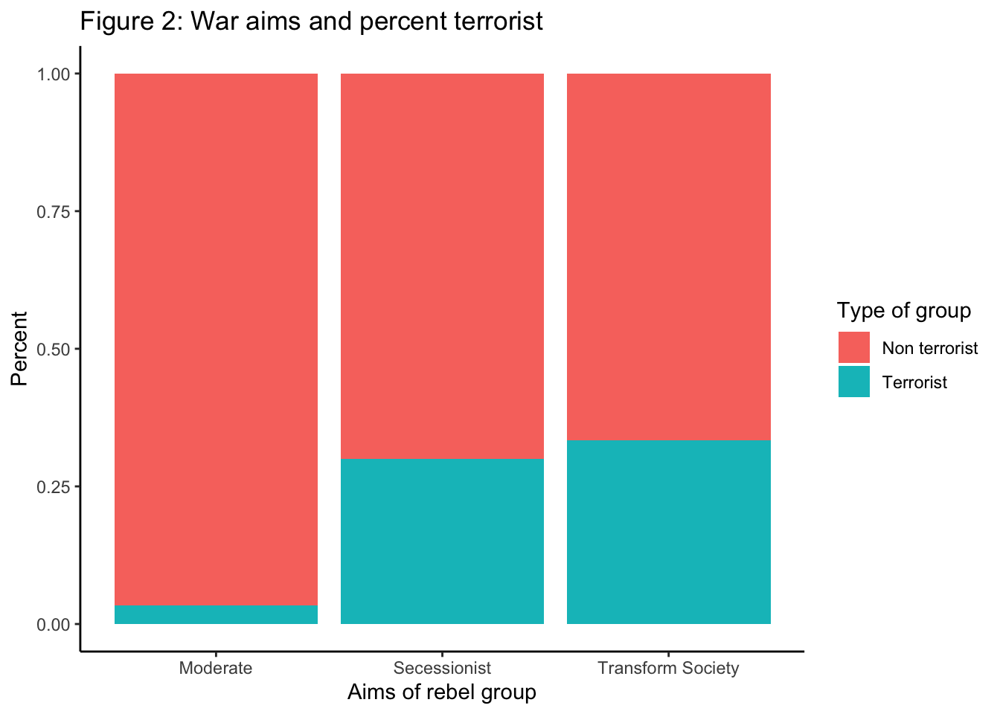
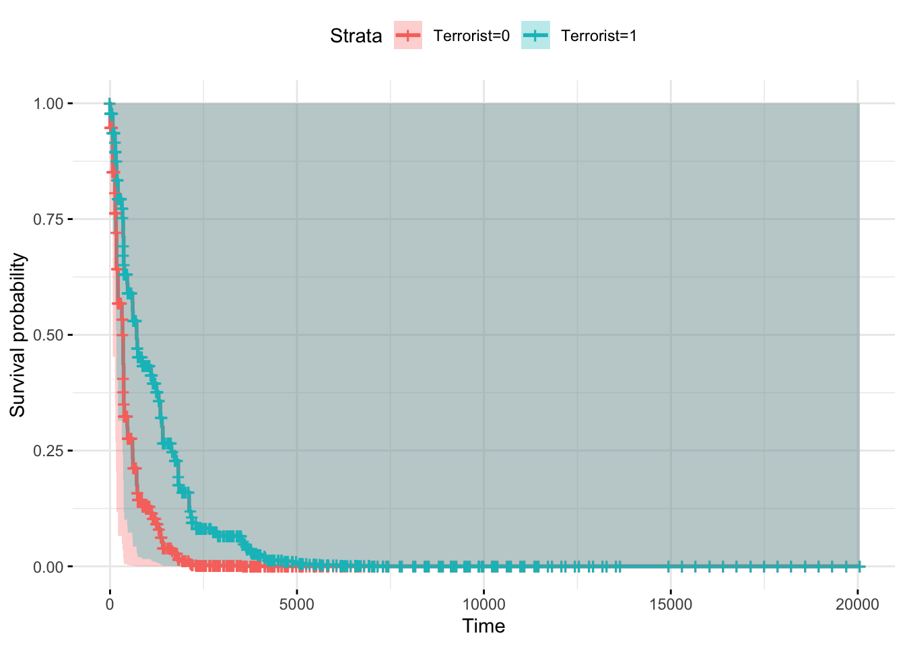
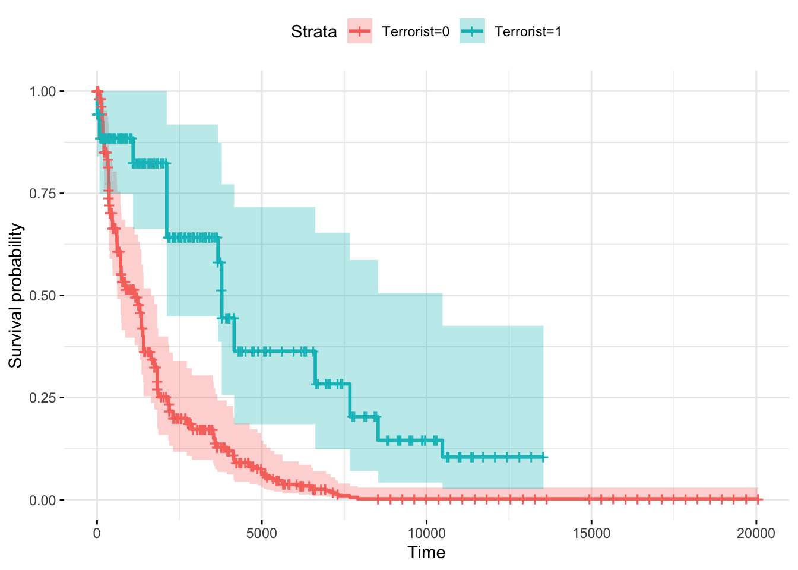
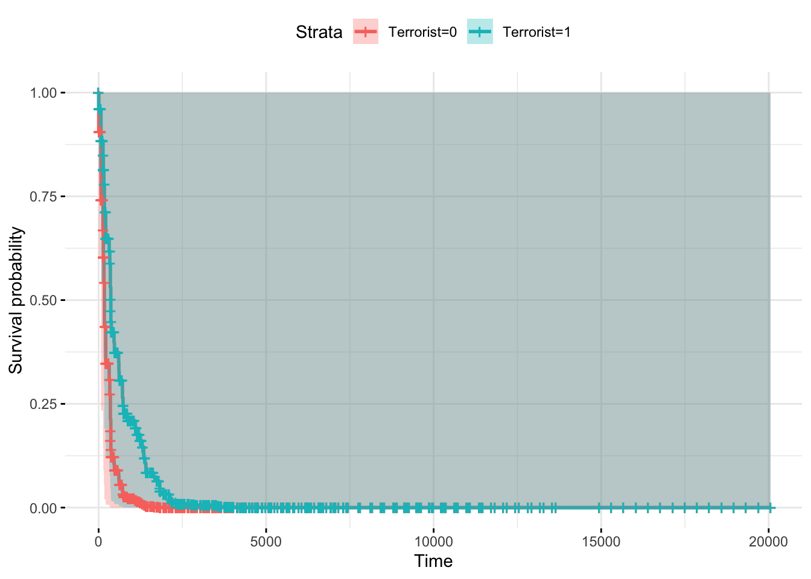
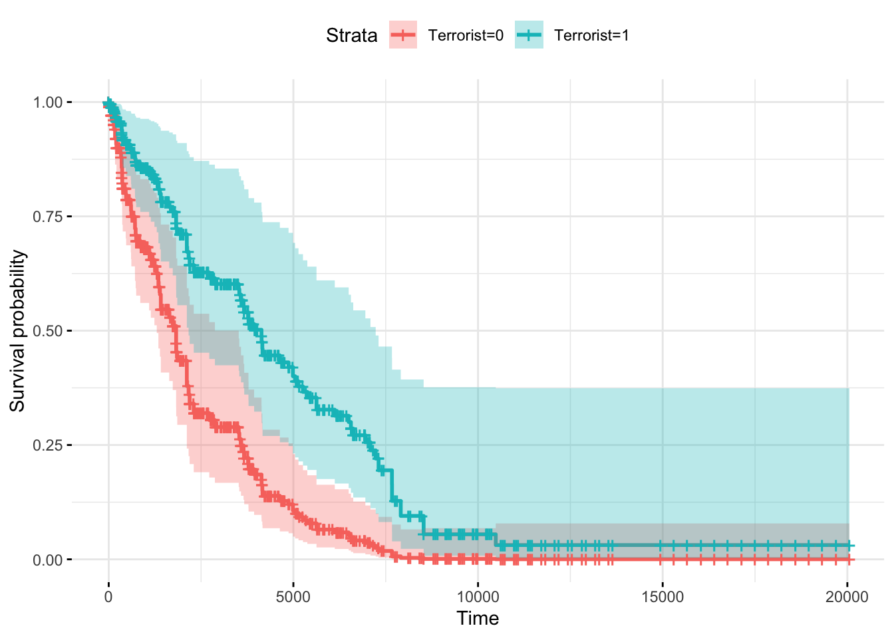

Chapter 4 Session III - Survival models in R - Cox and Weibull

4.1 Introduction
In this third session of the microeconometrics tutorial we are going to learn how to implement duration models using R. We are going to divide the tutorial in 3 parts:
The first part consist in a brief explanation of the intuition behind the estimation method. This first part is embeded along the two
The second part is devoted to replication of the results of a paper on terrorism by rebel groups and the duration of war, by Virginia Fortna. This paper is publihed in a political science journal, and the paper is interesting by the relevance of the topic, the method, and I think is also important to remark that the approach and methods of the course are not only relevant for economics. The author uses in her paper two methods that are relevant for this course, the Cox proportional hazard model. In this part I will also present the basics on the use of
ggplot2for doing visualizations.The third part we are going to replicate the first columns of an IO paper using a Weibull duration analysis. The paper was published in the American Economic Journal 2013, and asess the problem of the time of failure of establishments cnsidering the distance from the Headquarters. The paper was written by Arturs Kalnins and Francine Lafontaine.
In the last tutorial we focus on the MLE, and how to build the functions from scratch. We learned how to derive the likelihood, set the optimization problem and retrieve the parameters and the standard errors from custom functions using R. During this tutorial we are not going to use the custom function approach, and we will just use build in functions from retrieving the estimates. Just remember the procedure that is behind, and how the software is finding the estimates.
4.2 Example I - Cox proportional hazard model
For this part we are going to use replicate “Do Terrorists Win? Rebels Use of Terrorism and Civil War Outcomes” by Virginia Fortna. The paper asses the outcomes of terrorism in the evolution of wars between governments and rebels groups; to do so it compares the outcomes between conflicts that uses terrorism as a tactic agains other tactics. The paper presents the following hypothesis (Fortna 2015):
“H1: Terrorist rebels are less likely than nonterrorist rebels to achieve military victory.”
“H2: Rebels using terrorism are less likely than those who eschew terrorism to achieve negotiated settlements.”
“H3: Wars involving terrorist rebels are likely to last longer than those involving nonterrorist rebels.”
“H4: Terrorism will be more effective against democratic governments than against nondemocratic governments.”
The data for this exercise can be found here in STATA format or here in CSV format. Proceed to download the data and to load the data to you R session. Since the data is not very big we are going to use the readr package (???).
library(readr)
data <- read_csv("YOUR PATH GOES HERE")The first thing we are going to do is to replicate Figure 2 of the paper. The figure presents the share of terrorist groups by ‘war aims’ for each of the 104 groups in the data.
The data used in the study is an extended version (untill 2009) of the Uppsala-PRIO Armed Conflict Data merged with time varing characteristics for these 104 armed groups comming from Cunningham, Gleditsch, and Salehyan’s Non-State Actor data set. The categorization of terrorist comes from the *Stanton’s coding of “high casualty terrorism,” a measure of a group’s systematic use of small-scale bombs to attack unambiguously civilian targets.“*.
The categories of ‘war aims’ are constructed from aims of the groups.
The moderate are the groups that don’t intend to transform society neither independence.
The secessionist are the groups that the principal cause for war is the independence.
The Transform society group are the groups that have as objective the transofrmation of society.
Given that in the database there is a ‘flag’ for the first observation, we are going to use that to plot the graph. First we categorize in a variable of ‘war aims’ (wa_pt) all the cases.
data$wa_pt <- ifelse(data$independenceC==0 & data$transformC==0 & data$firstob==1, "Moderate", NA)
data[which(data$independenceC==1 & data$firstob==1),]$wa_pt <- "Secessionist"
data[which(data$transformC==1 & data$firstob==1),]$wa_pt <- "Transform Society"hen we are going to build a proportion table with all the cases so we can compare and see that we have the right result and proceed to do the ploting. We construct for this matter a two way table and then we include the proportions. Given that we are interested in the proportons by group, we include the margin of the second element of the table (columns). If we don’t include these we would have the absolute proportion, that is difficult to interpret in this case.
twt_terror_wa <- table(data$HCTrebels, data$wa_pt)
prop.table(twt_terror_wa, margin = 2)##
## Moderate Secessionist Transform Society
## 0 0.96666667 0.70000000 0.66666667
## 1 0.03333333 0.30000000 0.33333333In order to plot this we are going to use ggplot [@]. We have to specify the followin elements:
data
mapping. In this case the aestethics of the mapping of the data. This mean that in this part you poin what variable should be treted as ‘x’ or ‘y’.
in the next line we define the type of graph, in this case a simple bar plot (for examples of ggplot visualizations this is a nice guide).
All the other lines are just options on the colour and labels (optional); but allows a high degree of customization.
library(ggplot2)
plot_wa_t <- ggplot(data[which(!is.na(data$wa_pt) & !is.na(data$HCTrebels)),], aes(wa_pt, fill = factor(HCTrebels))) +
geom_bar(position="fill")+
xlab("Aims of rebel group") +
ylab("Percent") +
theme_classic() +
scale_fill_discrete(name = "Type of group", labels = c("Non terrorist", "Terrorist")) +
ggtitle("Figure 2: War aims and percent terrorist")
plot_wa_t  Then we are going to save our plot in the output folder. In this case is the images folder that we set up last time. We are going to save it in two formats fixing the with and hight. This is optional but is an example so you can see the flexibility of the procedure (image for a poster or for a paper without loosing the quality of the image for example).
setwd("~/Documents/Jaime/github/Files_doctorado/Microeconometrics/Material/")
output <- "images/"
ggsave(filename = paste0(output,"waraims_terrorist.pdf"), plot = plot_wa_t, width = 20, height = 20, units = "cm")
ggsave(filename = paste0(output,"waraims_terrorist.png"), plot = plot_wa_t, width = 20, height = 20, units = "cm")Proposed exercise: Using ggplot2 reproduce Table 3 and 4 of the paper of Fortna 2015.
Now we are going to reproduce the logit model presented in Table 1 in the paper.
This analysis of terrorism as the dependent variable, rather than the independent variable as it is in the rest of the article, suggests that terrorism is most likely in civil wars in democracies, where rebels face governments representing a different religion, and is seldom seen in Africa (indeed in the data used in this study, there are no cases of high-casualty terrorism by African rebel groups).
Before running the regression I point out that the variable o_rebstrength is a factor variable (categorical) and in the paper is treated as a continuous variable. What are the levels that this variable uses? Are the same for all statisticals softwares? (R vs. STATA for example)
Indeed there are some differences. In STATA when we treat a categorical variable as continuous the assigned value of each category is from \(\in (0,N-1)\), while in R is form \(\in (1,N)\), where \(N\) is the number of categories in the variable. For example take in consideration the variable in discussion we woudl have:
table(data$o_rebstrength)##
## much weaker parity stronger weaker
## 418 53 7 537That in the case we want to treat is as continues becomes:
table(as.numeric(factor(data$o_rebstrength)))##
## 1 2 3 4
## 418 53 7 537This conversion has an implication in the estimates. In order to illustrate the differences, we are going to model each of the cases:
The paper choice, with categories in the interval \((0,3)\)
The R automatic clasification to numeric conversion \((1,4)\)
Using the variable as a categorical variable (factor)
The first thing we have to do is to charge the libraries that we are going to use:
dplyrto transform our data.stargazerto present our datasandwichto estimate correctly the errors of the model
Next we are going to construct the different variables that we are going to use in the regression and trim the data to get run the regression using the same sample as in the paper.
data$o_rebstrength_paper <- recode(data$o_rebstrength, "weaker" = 1L, "much weaker" = 0L , "parity" = 2L, "stronger" = 3L)
data$o_rebstrength_autom <- as.numeric(factor(data$o_rebstrength))
data_logit <- data[which(data$firstob == 1),]
data_logit <- data_logit[which(data_logit$africa == 0),]Then we proceed to do the regression:
logit_formula1 <- as.formula(HCTrebels ~ o_rebstrength_paper +
demdum +
independenceC +
transformC +
diffreligion +
lnpop +
lngdppc +
africa +
lnmtnest +
act2)
fit_logit <- glm(logit_formula1, data = data_logit, family = "binomial")
summary(fit_logit)##
## Call:
## glm(formula = logit_formula1, family = "binomial", data = data_logit)
##
## Deviance Residuals:
## Min 1Q Median 3Q Max
## -2.0000 -0.6668 -0.3528 0.6715 2.1582
##
## Coefficients: (1 not defined because of singularities)
## Estimate Std. Error z value Pr(>|z|)
## (Intercept) -7.22727 6.11560 -1.182 0.237
## o_rebstrength_paper -0.84333 0.73379 -1.149 0.250
## demdum 1.55454 0.77923 1.995 0.046 *
## independenceC -0.23851 1.42041 -0.168 0.867
## transformC 1.36614 1.36307 1.002 0.316
## diffreligion 1.22558 0.83982 1.459 0.144
## lnpop 0.21832 0.25434 0.858 0.391
## lngdppc 0.43696 0.51841 0.843 0.399
## africa NA NA NA NA
## lnmtnest -0.05701 0.36706 -0.155 0.877
## act2 0.10225 0.71189 0.144 0.886
## ---
## Signif. codes: 0 '***' 0.001 '**' 0.01 '*' 0.05 '.' 0.1 ' ' 1
##
## (Dispersion parameter for binomial family taken to be 1)
##
## Null deviance: 90.008 on 69 degrees of freedom
## Residual deviance: 62.024 on 60 degrees of freedom
## AIC: 82.024
##
## Number of Fisher Scoring iterations: 5We can see that the \(\beta\) are the same but the standa error and the p-values differ from the reported from the paper. The reason for this is that the error in the paper are clustered at the country level. How do we cluster the errors in R? Using the Clustered Variance Covariance matrix form the sandwich package we can retrieve the correct errors. We store the errors in a list, so we can put them directly in the stargazer function.
se <- c()
se[[1]] <- sqrt(diag(vcovCL(fit_logit,cluster = ~ js_countryid)))
stargazer(fit_logit,se = se,type = "text")##
## ===============================================
## Dependent variable:
## ---------------------------
## HCTrebels
## -----------------------------------------------
## o_rebstrength_paper -0.843
## (0.756)
##
## demdum 1.555**
## (0.720)
##
## independenceC -0.239
## (1.556)
##
## transformC 1.366
## (1.650)
##
## diffreligion 1.226**
## (0.508)
##
## lnpop 0.218
## (0.250)
##
## lngdppc 0.437
## (0.328)
##
## africa
##
##
## lnmtnest -0.057
## (0.311)
##
## act2 0.102
## (0.731)
##
## Constant -7.227
## (5.186)
##
## -----------------------------------------------
## Observations 70
## Log Likelihood -31.012
## Akaike Inf. Crit. 82.024
## ===============================================
## Note: *p<0.1; **p<0.05; ***p<0.01Then we proceed to perform the same operations for the other two cases so we can compare the results on the estimation.
logit_formula2 <- as.formula(HCTrebels ~ o_rebstrength_autom +
demdum +
independenceC +
transformC +
diffreligion +
lnpop +
lngdppc +
africa +
lnmtnest +
act2)
fit_logit2 <- glm(logit_formula2, data = data_logit, family = "binomial")
se[[2]] <- sqrt(diag(vcovCL(fit_logit2,cluster = ~ js_countryid)))
logit_formula3 <- as.formula(HCTrebels ~ o_rebstrength +
demdum +
independenceC +
transformC +
diffreligion +
lnpop +
lngdppc +
africa +
lnmtnest +
act2)
fit_logit3 <- glm(logit_formula3, data = data_logit, family = "binomial")
se[[3]] <- sqrt(diag(vcovCL(fit_logit3,cluster = ~ js_countryid)))
stargazer(fit_logit,fit_logit2,fit_logit3, type = "text", se = se, out = paste0(output,"Table1.tex"))##
## =================================================
## Dependent variable:
## -----------------------------
## HCTrebels
## (1) (2) (3)
## -------------------------------------------------
## o_rebstrength_paper -0.843
## (0.756)
##
## o_rebstrength_autom -0.188
## (0.265)
##
## o_rebstrengthparity -15.877***
## (1.209)
##
## o_rebstrengthweaker -0.719
## (0.826)
##
## demdum 1.555** 1.663** 1.617**
## (0.720) (0.728) (0.736)
##
## independenceC -0.239 -0.386 -0.212
## (1.556) (1.522) (1.614)
##
## transformC 1.366 1.387 1.358
## (1.650) (1.595) (1.674)
##
## diffreligion 1.226** 1.288** 1.195**
## (0.508) (0.518) (0.527)
##
## lnpop 0.218 0.288 0.206
## (0.250) (0.219) (0.248)
##
## lngdppc 0.437 0.523* 0.432
## (0.328) (0.300) (0.332)
##
## africa
##
##
## lnmtnest -0.057 -0.078 -0.059
## (0.311) (0.290) (0.319)
##
## act2 0.102 0.130 0.116
## (0.731) (0.735) (0.730)
##
## Constant -7.227 -8.579* -7.116
## (5.186) (4.613) (5.168)
##
## -------------------------------------------------
## Observations 70 70 70
## Log Likelihood -31.012 -31.406 -30.807
## Akaike Inf. Crit. 82.024 82.812 83.614
## =================================================
## Note: *p<0.1; **p<0.05; ***p<0.01The result are robust to treatin the variable as a continuous variable. Also the parameters that were significant remain significant in and the value is similar for the tested specifications. Now that we concluded this part let`s proceed with the replication of the Cox Proportional Hazard model, reported in table 2 of the paper.
What is Hazard function? Is the probability that the unit of analysis experiences the event of interest (in many cases (medical) the event of interest is death) within a time interval, given that it has survived up to the bigening of such interval. The intuition of the interpretation is risk of having the event of interest at time \(t\) (risk of dying at \(t\)). Look that this implied in the formulas of the hazard, since in the numerator we have the number of units that experience the event of interest at time t, while in the denominator we have the surviving individuals (times the length of the interval).
\[\lambda(t|X)=\lambda_0(t) e^{X` \beta}\] The likelihood of the event is then:
\[L_i(\beta)=\frac{\lambda(Y_i|X_i)}{\sum_{Y_j >Y_i} \lambda(Y_i|X_j)}=\frac{e^{X_i` \beta}}{\sum_{Y_j >Y_i} e^{X_j` \beta}}\]
This is a continuous function with first and second derivative defined, so the score and the hessian is fully identified. The Newton-Raphson method can be used to optimize such function and find the parameters of interest.
In order to estimate the Cox we are going to use the survival package. We load the library and then we use the same sample that is used in the paper. We also define the variables of the start date and end date.
datacox <- data[which(data$keepobs==1),]
datacox$end_date <- datacox$`_t`
datacox$start_date <- datacox$`_t0`To perform the Cox regression we are going to use the command coxph(). This function need as input the following elements:
Formula, that has dependant variable has a Survival Object.
Data: a data frame containing the data to analyze.
In the paper they use the robust standard error so we use the option. Moreover since we know that the paper used stata, the “breslow” option for the ties is set up. We choose this to assure we get the same results as in the paper. Following the input we define the formula. From the help on the function we also know that:
There are three special terms that may be used in the model equation. A strata term identifies a stratified Cox model; separate baseline hazard functions are fit for each strata. The cluster term is used to compute a robust variance for the model. The term + cluster(id) where each value of id is unique is equivalent to specifying the robust=TRUE argument. If the id variable is not unique, it is assumed that it identifies clusters of correlated observations. The robust estimate arises from many different arguments and thus has had many labels. It is variously known as the Huber sandwich estimator, White’s estimate (linear models/econometrics)
So we can include the robust clustered by country standard errors in the formula for this function.
formulaCox <- as.formula(Surv(start_date, end_date, warends) ~
HCTrebels +
o_rebstrength_paper +
demdum +
independenceC +
transformC +
lnpop +
lngdppc +
africa +
diffreligion +
warage +
cluster(js_countryid))We then proceed to the estimation.
fit_cox <- coxph(formulaCox, data = datacox, robust = TRUE, method="breslow")
fit_cox## Call:
## coxph(formula = formulaCox, data = datacox, robust = TRUE, method = "breslow")
##
## coef exp(coef) se(coef) robust se z p
## HCTrebels -0.8941 0.4090 0.3694 0.3146 -2.84 0.0045
## o_rebstrength_paper 0.1463 1.1576 0.2214 0.1939 0.75 0.4505
## demdum -0.5288 0.5893 0.4123 0.3952 -1.34 0.1809
## independenceC -0.6257 0.5349 0.3328 0.3484 -1.80 0.0725
## transformC -0.6392 0.5277 0.3384 0.2831 -2.26 0.0240
## lnpop -0.0646 0.9374 0.1185 0.0952 -0.68 0.4974
## lngdppc -0.0879 0.9158 0.2060 0.1867 -0.47 0.6377
## africa -0.5608 0.5708 0.3024 0.2898 -1.94 0.0530
## diffreligion 0.4305 1.5380 0.3345 0.2878 1.50 0.1347
## warage -0.0375 0.9632 0.0405 0.0298 -1.26 0.2090
##
## Likelihood ratio test=30.1 on 10 df, p=8e-04
## n= 566, number of events= 86
## (68 observations deleted due to missingness)As we can see the exponented coefficient coincide with the values reported in the paper. Nevertheless the standard errors don’t. This is due to two things:
- In stata the errors are adjusted by the ratio of the number of groups in the clustered errors.
\[SE * \frac{g}{g-1}\] 2. The reported values are scaled, using the delta method.
In order to adjust for this two things the new errors are computed:
\[\hat{SE}=\left(\beta^2 \times diag(\Sigma) \times \frac{g}{g-1} \right)^{\frac{1}{2}}\] We proceed to perform the calculations:
adjustment <- nlevels(factor(datacox$js_countryid))
se_cox <- c()
se_cox[[1]] <- sqrt(exp(coef(fit_cox))^2*diag(vcov(fit_cox)) * (adjustment/(adjustment-1)))
fit_cox$coefficients <- exp(fit_cox$coefficients)
tval <- c()
tval[[1]] <- as.vector(fit_cox$coefficients)/se_cox[[1]]
pvalues <- c()
pvalues[[1]] <- pt(abs(tval[[1]]), df = 10, lower.tail = FALSE)*2
stargazer(fit_cox, se = se_cox,type = "text", p = pvalues)##
## ================================================
## Dependent variable:
## ---------------------------
## start_date
## ------------------------------------------------
## HCTrebels 0.409**
## (0.130)
##
## o_rebstrength_paper 1.158***
## (0.227)
##
## demdum 0.589**
## (0.235)
##
## independenceC 0.535**
## (0.188)
##
## transformC 0.528***
## (0.151)
##
## lnpop 0.937***
## (0.090)
##
## lngdppc 0.916***
## (0.173)
##
## africa 0.571***
## (0.167)
##
## diffreligion 1.538***
## (0.447)
##
## warage 0.963***
## (0.029)
##
## ------------------------------------------------
## Observations 566
## R2 0.052
## Max. Possible R2 0.624
## Log Likelihood -261.948
## Wald Test 57.460*** (df = 10)
## LR Test 30.095*** (df = 10)
## Score (Logrank) Test 29.239*** (df = 10)
## ================================================
## Note: *p<0.1; **p<0.05; ***p<0.01“In duration models such as this one, hazard ratios are interpreted relative to 1. Hazard ratios less than 1 indicate variables associated with longer wars; those with hazard ratios greater than 1 with shorter wars. The hazard ratio of 0.41 for terrorism indicates an estimated 59 percent reduction in the hazard of war termination, all else equal—an effect that is highly statistically significant.”
Now we do the same for the other two especifications that we are testing:
formulaCox2 <- as.formula(Surv(start_date, end_date, warends) ~
HCTrebels +
o_rebstrength_autom +
demdum +
independenceC +
transformC +
lnpop +
lngdppc +
africa +
diffreligion +
warage +
cluster(js_countryid))
fit_cox2 <- coxph(formulaCox2, data = datacox, robust = TRUE, method="breslow")
adjustment <- nlevels(factor(datacox$js_countryid))
se_cox[[2]] <- sqrt(exp(coef(fit_cox2))^2*diag(vcov(fit_cox2)) * (adjustment/(adjustment-1)))
fit_cox2$coefficients <- exp(fit_cox2$coefficients)
tval[[2]] <- as.vector(fit_cox$coefficients)/se_cox[[2]]
pvalues[[2]] <- pt(abs(tval[[2]]), df = 10, lower.tail = FALSE)*2
formulaCox3 <- as.formula(Surv(start_date, end_date, warends) ~
HCTrebels +
o_rebstrength +
demdum +
independenceC +
transformC +
lnpop +
lngdppc +
africa +
diffreligion +
warage +
cluster(js_countryid))
fit_cox3 <- coxph(formulaCox3, data = datacox, robust = TRUE, method="breslow")
adjustment <- nlevels(factor(datacox$js_countryid))
se_cox[[3]] <- sqrt(exp(coef(fit_cox3))^2*diag(vcov(fit_cox3)) * (adjustment/(adjustment-1)))
fit_cox3$coefficients <- exp(fit_cox3$coefficients)
tval[[3]] <- as.vector(fit_cox$coefficients)/se_cox[[3]]## Warning in as.vector(fit_cox$coefficients)/se_cox[[3]]: longer object
## length is not a multiple of shorter object lengthpvalues[[3]] <- pt(abs(tval[[3]]), df = 12, lower.tail = FALSE)*2
stargazer(fit_cox, fit_cox2, fit_cox3, se = se_cox,type = "text", p = pvalues)##
## =================================================================================
## Dependent variable:
## -----------------------------------------------------------
## start_date
## (1) (2) (3)
## ---------------------------------------------------------------------------------
## HCTrebels 0.409** 0.409*** 0.405***
## (0.130) (0.127) (0.126)
##
## o_rebstrength_paper 1.158***
## (0.227)
##
## o_rebstrength_autom 0.904***
## (0.068)
##
## o_rebstrengthparity 1.301*
## (0.543)
##
## o_rebstrengthstronger 2.592
## (1.271)
##
## o_rebstrengthweaker 0.818**
## (0.208)
##
## demdum 0.589** 0.608** 0.558**
## (0.235) (0.243) (0.239)
##
## independenceC 0.535** 0.537** 0.536***
## (0.188) (0.194) (0.195)
##
## transformC 0.528*** 0.525*** 0.516***
## (0.151) (0.156) (0.157)
##
## lnpop 0.937*** 0.868*** 0.912***
## (0.090) (0.089) (0.097)
##
## lngdppc 0.916*** 0.862*** 0.890***
## (0.173) (0.183) (0.184)
##
## africa 0.571*** 0.532*** 0.511***
## (0.167) (0.167) (0.160)
##
## diffreligion 1.538*** 1.468*** 1.562
## (0.447) (0.424) (0.465)
##
## warage 0.963*** 0.956*** 0.958***
## (0.029) (0.030) (0.030)
##
## ---------------------------------------------------------------------------------
## Observations 566 566 566
## R2 0.052 0.053 0.056
## Max. Possible R2 0.624 0.624 0.624
## Log Likelihood -261.948 -261.560 -260.641
## Wald Test 57.460*** (df = 10) 65.820*** (df = 10) 86.590*** (df = 12)
## LR Test 30.095*** (df = 10) 30.870*** (df = 10) 32.709*** (df = 12)
## Score (Logrank) Test 29.239*** (df = 10) 29.819*** (df = 10) 31.963*** (df = 12)
## =================================================================================
## Note: *p<0.1; **p<0.05; ***p<0.01Now that we have completed the estimation, we want to asess the effect of being a terrorrist group on the duration of war. So plotting the survival rates is a good way to visualize because it allows us to identify the isolated effect of the variable. To do so we create a fictitious dataframe with two rows, one for each of the groups (terrorist, non terrorist), and in which the other columns are all the same for the two rows. We can determine which channels are on, so we can control the survival cases.
fit_cox <- coxph(formulaCox, data = datacox, robust = TRUE, method="breslow")
HCTrebels_df0 <- as.data.frame(cbind(HCTrebels = c(0,1),
o_rebstrength_paper = c(1,1),
demdum=c(0,0),
independenceC=c(1,1),
transformC=c(0,0),
africa =c(0,0),
diffreligion =c(0,0),
warage =c(0,0),
lnpop =c(0,0),
lngdppc = c(0,0)
))
fit <- survfit(fit_cox, newdata = HCTrebels_df0, data = datacox)
ggsurvplot(fit, conf.int = TRUE, legend.labs=c("Terrorist=0", "Terrorist=1"),
ggtheme = theme_minimal())
Using only the interest regressor:
formulaCox_simple <- as.formula(Surv(start_date, end_date, warends) ~
strata(HCTrebels))
fit_cox_simple <- coxph(formulaCox_simple, data = datacox, robust = TRUE, method="breslow")
ggsurvplot(survfit(fit_cox_simple), data = datacox, conf.int = TRUE, legend.labs=c("Terrorist=0", "Terrorist=1"),
ggtheme = theme_minimal())
Controling for the covariates:
HCTrebels_df2 <- as.data.frame(cbind(HCTrebels = c(0,1),
o_rebstrength_paper = c(1,1),
demdum=c(0,0),
independenceC=c(0,0),
transformC=c(0,0),
africa =c(0,0),
diffreligion =c(0,0),
warage =c(0,0),
lnpop =c(0,0),
lngdppc = c(0,0)
))
fit <- survfit(fit_cox, newdata = HCTrebels_df2, data = datacox)
ggsurvplot(fit, conf.int = TRUE, legend.labs=c("Terrorist=0", "Terrorist=1"),
ggtheme = theme_minimal())
Taking the mean of each column:
means_data <- datacox %>% select(
o_rebstrength_paper,
demdum,
independenceC,
transformC,
lnpop,
lngdppc,
africa,
diffreligion,
warage) %>%
summarize_all(.,mean, na.rm = TRUE)
HCTrebels_df <- cbind(HCTrebels = c(0,1),rbind(means_data,means_data))
fit <- survfit(fit_cox, newdata = HCTrebels_df, data = datacox)
ggsurvplot(fit, conf.int = TRUE, legend.labs=c("Terrorist=0", "Terrorist=1"),
ggtheme = theme_minimal())
4.3 Example II: Weibull regression
In the second part of this tutorial we are going to perform a Weibull regression to estimate survival data. In order to understand what is the procedure behind, consider the distribution of a time event:
\[\log(t) = X \beta + \sigma \epsilon\]
Where is a vector of the coeficcients of interest, is the shape parameter, and folows a extreme minimum value distribution \(\epsilon \in (0,\sigma)\). This function a proportional hazard function given by:
\[h(t,X,\beta,\lambda) = \lambda \gamma t^{\lambda -1}e^\lambda X \beta = h_0(t) e^{X \theta}\] This speicfication as in the Cox model will allow to assess the treatment effect in term of the hazard rate with respect to a censoring analysis. This is choosed by the author by:
Since the Weibull model exhibits the “proportional hazard rate” property, changes in regressors shift the baseline hazard, \(h_o(t)\), and the exponentiated coefficients capture the effect of a one-unit increase in a particular variable on the exit hazard. Specifically, if the exponentiated coefficient b is greater (smaller) than one, the difference \((b−1)*100\) indicates the percentage by which a one-unit increase in the explanatory variable would increase (decrease) the hazard of exit. Because exponentiated coefficients are more easily interpreted, we show these in Tables 2 and 3. As is standard in survival analyses, we present standard errors and show statistical significance for the original coefficients.
In order to understand how to use this procedure we are going to replicate the first two columns of table 2 of a paper that tries to assess the effect of distance of headquarters on the survival of establishments. The paper first motivates and explains the mechanisms behind this formulation:
Distance from the headquarters may be a function of the quality of the monitoring by the HQ on the employees. Thus the effort of the employees may be lower in distant stablishments (this is the economic reason you may want to licence a franchise).
Knowledge of the characteristics of local market conditions.
Local market power
Optimal location of HQ and stablishments. (endogeneity of distance)
Reputation effect. When experiencing a crisis and facing the desicion of a closure the manager of a firm must decide which stablishment to close. Closing the nearest affect the local comunity of the HQ which might be undesirable.
Let’s first import the data using the data.table package. We also trim the data so it correspond to the sample used by the author in the paper.
library(data.table)
data <- fread("YOUR PATH GOES HERE")
data <- data[which(data$touse == 1),]If you are in a windows machine you need to set the system locale to english to make the dates operation work.
Sys.setlocale("LC_TIME", "English_United States")## Warning in Sys.setlocale("LC_TIME", "English_United States"): OS reports
## request to set locale to "English_United States" cannot be honored## [1] ""We are going to define the starting and end date, the censoring of the observations, and the duration of the event.
data$ostart <- as.Date(data$ostart, "%d%b%Y")
data$oend <- as.Date(data$oend, "%d%b%Y")
data[is.na(data$oend),]$oend <- as.Date("01jan2007", "%d%b%Y")
data$rcensored <- as.numeric(data$oend != as.Date("01jan2007", "%d%b%Y"))
data$duration <- data$oend - data$ostartThe basic specification is controlled by: dummy variables for HQ geocode quality and for establishment geocode quality, for organization type, and for year of founding.
To control for vari- ous dimensions of heterogeneity that could affect exit rates, all regressions include dummy variables for the six forms of organization (proprietorships, limited and general partnerships, Texan limited liability, and Texan and non-Texan corporations), the year of founding, which control for macroeconomic conditions at the time of founding, and for the seven geocoding quality for the establishment and also for the owner HQ addresses.
As usual we construct our formula to use in the function:
formula1 <- as.formula(Surv(duration, rcensored) ~
factor(ototype) +
factor(yearstart) +
factor(own_geo_quality) +
factor(outl_geo_quality) +
lgtdistgeo)fit1 <- survreg(formula1,
data = data,
dist = "weibull",
control = list(maxiter = 60))
summary(fit1)##
## Call:
## survreg(formula = formula1, data = data, dist = "weibull", control = list(maxiter = 60))
## Value Std. Error
## (Intercept) 7.709006 0.092057
## factor(ototype)CL: Texas Limited Liability Co -0.261218 0.013281
## factor(ototype)CT: Texas Profit Corp -0.207343 0.009931
## factor(ototype)IS: Individual - Sole Owner -0.847139 0.009751
## factor(ototype)PG: General Partnership -1.092472 0.010186
## factor(ototype)PL: Limited Partnership - Texas 0.560364 0.014084
## factor(yearstart)1991 -0.116920 0.005202
## factor(yearstart)1992 -0.269548 0.004965
## factor(yearstart)1993 -0.303684 0.004995
## factor(yearstart)1994 -0.288483 0.005074
## factor(yearstart)1995 -0.318193 0.005116
## factor(yearstart)1996 -0.301163 0.005270
## factor(yearstart)1997 -0.272139 0.005394
## factor(yearstart)1998 -0.279865 0.005369
## factor(yearstart)1999 -0.192516 0.005412
## factor(yearstart)2000 -0.216911 0.005575
## factor(yearstart)2001 -0.218254 0.005665
## factor(yearstart)2002 -0.249323 0.005587
## factor(yearstart)2003 -0.215979 0.005789
## factor(own_geo_quality)Street Exact 0.543391 0.063180
## factor(own_geo_quality)Street Score 30 - 50 0.711444 0.063864
## factor(own_geo_quality)Street Score 50 - 80 0.672519 0.063274
## factor(own_geo_quality)Street Score 80 - 99 0.406690 0.063241
## factor(own_geo_quality)Zip Centroid 0.645196 0.063191
## factor(outl_geo_quality)Street Exact 0.173846 0.071878
## factor(outl_geo_quality)Street Score 30 - 50 -0.020364 0.072150
## factor(outl_geo_quality)Street Score 50 - 80 -0.021429 0.071926
## factor(outl_geo_quality)Street Score 80 - 99 -0.296365 0.071903
## factor(outl_geo_quality)Zip Centroid 0.013879 0.071922
## lgtdistgeo -0.100326 0.000661
## Log(scale) 0.152978 0.000682
## z p
## (Intercept) 83.74 < 2e-16
## factor(ototype)CL: Texas Limited Liability Co -19.67 < 2e-16
## factor(ototype)CT: Texas Profit Corp -20.88 < 2e-16
## factor(ototype)IS: Individual - Sole Owner -86.87 < 2e-16
## factor(ototype)PG: General Partnership -107.25 < 2e-16
## factor(ototype)PL: Limited Partnership - Texas 39.79 < 2e-16
## factor(yearstart)1991 -22.47 < 2e-16
## factor(yearstart)1992 -54.29 < 2e-16
## factor(yearstart)1993 -60.80 < 2e-16
## factor(yearstart)1994 -56.85 < 2e-16
## factor(yearstart)1995 -62.19 < 2e-16
## factor(yearstart)1996 -57.15 < 2e-16
## factor(yearstart)1997 -50.46 < 2e-16
## factor(yearstart)1998 -52.12 < 2e-16
## factor(yearstart)1999 -35.57 < 2e-16
## factor(yearstart)2000 -38.91 < 2e-16
## factor(yearstart)2001 -38.52 < 2e-16
## factor(yearstart)2002 -44.63 < 2e-16
## factor(yearstart)2003 -37.31 < 2e-16
## factor(own_geo_quality)Street Exact 8.60 < 2e-16
## factor(own_geo_quality)Street Score 30 - 50 11.14 < 2e-16
## factor(own_geo_quality)Street Score 50 - 80 10.63 < 2e-16
## factor(own_geo_quality)Street Score 80 - 99 6.43 1.3e-10
## factor(own_geo_quality)Zip Centroid 10.21 < 2e-16
## factor(outl_geo_quality)Street Exact 2.42 0.016
## factor(outl_geo_quality)Street Score 30 - 50 -0.28 0.778
## factor(outl_geo_quality)Street Score 50 - 80 -0.30 0.766
## factor(outl_geo_quality)Street Score 80 - 99 -4.12 3.8e-05
## factor(outl_geo_quality)Zip Centroid 0.19 0.847
## lgtdistgeo -151.85 < 2e-16
## Log(scale) 224.22 < 2e-16
##
## Scale= 1.17
##
## Weibull distribution
## Loglik(model)= -11703225 Loglik(intercept only)= -11779241
## Chisq= 152030.9 on 29 degrees of freedom, p= 0
## Number of Newton-Raphson Iterations: 5
## n= 1713602The values reported are the transformed exponeted coeffients, given by:
\[\tilde{\beta}=exp\left(-\frac{\beta}{\sigma}\right)\]
AS usual we scale the standard errors to the transnformation we just proposed.
fit1$coefficients <- exp(-(fit1$coefficients)/(fit1$scale))
se <- list()
se[[1]] <- sqrt(c(fit1$coefficients,1)^2 * diag(fit1$var))
stargazer(fit1,
se = se,
type = "text",
omit = c("ototype",
"yearstart",
"own_geo_quality",
"outl_geo_quality"))##
## ==========================================
## Dependent variable:
## ---------------------------
## duration
## ------------------------------------------
## lgtdistgeo 1.090***
## (0.001)
##
## Constant 0.001***
## (0.0001)
##
## ------------------------------------------
## Observations 1,713,602
## Log Likelihood -11,703,225.000
## chi2 152,030.900*** (df = 29)
## ==========================================
## Note: *p<0.1; **p<0.05; ***p<0.01This coincides with the first column of table 2 of the paper. Now let’s proceed to include the number fo previous stablishments.
formula2 <- as.formula(Surv(duration, rcensored) ~
factor(ototype) +
factor(yearstart) +
factor(own_geo_quality) +
factor(outl_geo_quality) +
lgtdistgeo +
lgobf)
fit2 <- survreg(formula2,
data = data,
dist = "weibull",
control = list(maxiter = 60))
fit2$coefficients <- exp(-(fit2$coefficients)/(fit2$scale))
se[[2]] <- sqrt(c(fit2$coefficients,1)^2 * diag(fit2$var))Then we present the results using stargazer.
stargazer(fit1, fit2,
se = se,
type = "text",
omit = c("ototype",
"yearstart",
"own_geo_quality",
"outl_geo_quality"))##
## ================================================================
## Dependent variable:
## -------------------------------------------------
## duration
## (1) (2)
## ----------------------------------------------------------------
## lgtdistgeo 1.090*** 1.102***
## (0.001) (0.001)
##
## lgobf 0.864***
## (0.002)
##
## Constant 0.001*** 0.002***
## (0.0001) (0.0001)
##
## ----------------------------------------------------------------
## Observations 1,713,602 1,713,602
## Log Likelihood -11,703,225.000 -11,698,282.000
## chi2 152,030.900*** (df = 29) 161,916.700*** (df = 30)
## ================================================================
## Note: *p<0.1; **p<0.05; ***p<0.01Why we are not reproducing the other columns?

4.4 References
Abrevaya, Jason. 2002. “The Effects of Demographics and Maternal Behavior on the Distribution of Birth Outcomes.” In Economic Applications of Quantile Regression, 247–57. Springer.
Bolker, Ben, and R Development Core Team. 2017. Bbmle: Tools for General Maximum Likelihood Estimation. https://CRAN.R-project.org/package=bbmle.
Dowle, Matt, and Arun Srinivasan. 2019. Data.table: Extension of ‘Data.frame‘. https://CRAN.R-project.org/package=data.table.
Firpo, Sergio, Nicole M Fortin, and Thomas Lemieux. 2009. “Unconditional Quantile Regressions.” Econometrica 77 (3). Wiley Online Library: 953–73.
Firpo, Sergio, Nicole Fortin, and Thomas Lemieux. 2018. “Decomposing Wage Distributions Using Recentered Influence Function Regressions.” Econometrics 6 (2). Multidisciplinary Digital Publishing Institute: 28.
Flinn, Christopher, and James Heckman. 1982. “New Methods for Analyzing Structural Models of Labor Force Dynamics.” Journal of Econometrics 18 (1). Elsevier: 115–68.
Fortna, Virginia Page. 2015. “Do Terrorists Win? Rebels’ Use of Terrorism and Civil War Outcomes.” International Organization 69 (3). Cambridge University Press: 519–56.
Hlavac, Marek. 2018. Stargazer: Well-Formatted Regression and Summary Statistics Tables. https://CRAN.R-project.org/package=stargazer.
Koenker, Roger, and Kevin F Hallock. 2001. “Quantile Regression.” Journal of Economic Perspectives 15 (4): 143–56.
Machado, José AF, and José Mata. 2005. “Counterfactual Decomposition of Changes in Wage Distributions Using Quantile Regression.” Journal of Applied Econometrics 20 (4). Wiley Online Library: 445–65.
Maechler, Martin. 2019. Rmpfr: R Mpfr - Multiple Precision Floating-Point Reliable. https://CRAN.R-project.org/package=Rmpfr.
Treisman, Daniel. 2016. “Russia’s Billionaires.” American Economic Review 106 (5): 236–41.
Wickham, Hadley, and Evan Miller. 2019. Haven: Import and Export ’Spss’, ’Stata’ and ’Sas’ Files. https://CRAN.R-project.org/package=haven.
Wickham, Hadley, Winston Chang, Lionel Henry, Thomas Lin Pedersen, Kohske Takahashi, Claus Wilke, Kara Woo, and Hiroaki Yutani. 2019. Ggplot2: Create Elegant Data Visualisations Using the Grammar of Graphics. https://CRAN.R-project.org/package=ggplot2.
Wickham, Hadley, Romain François, Lionel Henry, and Kirill Müller. 2018. Dplyr: A Grammar of Data Manipulation. https://CRAN.R-project.org/package=dplyr.
Wickham, Hadley, Jim Hester, and Romain Francois. 2017. Readr: Read Rectangular Text Data. https://CRAN.R-project.org/package=readr.

This work is licensed under a Creative Commons Attribution 4.0 International License.